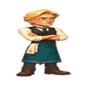

스토리 팝업(채팅)에서 화자 11명이 어떤 감정으로 말하는지(시트)와, 그 감정에 지금 들어와 있는 캐릭터 이미지를 한 표에 겹쳐 놓은 현황이다. 아래쪽에는 마을(데코레이션)에서 지점이 세우는 캐릭터 감정도 같은 방식으로 붙였다. 교체 규칙은 다루지 않고 현재 데이터만 보여 준다.
가로는 감정, 세로는 화자다. 칸 안의 숫자는 시트가 그 감정으로 부른 대사 줄 수라서, 숫자가 클수록 그 화자가 그 감정으로 자주 말한다. 시트의 감정어(plain · glow · ache 등)를 앱의 감정 이름 19개로 묶어 센 값이고, 칸에 마우스를 올리면 묶인 감정어와 줄 수가 나온다. 빈 칸은 시트도 이미지도 해당이 없는 칸이다.
| 화자 대사 줄 수 | neutral중립 | happy기쁨 | sad슬픔 | angry분노 | worried걱정 | confident자신감 | serious진지 | thinking생각 | surprised놀람 | fear공포 | awkward어색함 | confused혼란 | suspicious의심 | sympathetic공감 | passionate열정 | anxious불안 | dinial부정 | resignation체념 | hood후드 |
|---|---|---|---|---|---|---|---|---|---|---|---|---|---|---|---|---|---|---|---|
| Brett145줄 | 51줄 | 59줄 | NEW미사용 | 8줄 | 필요 1줄 | 24줄 | 필요 2줄 | ||||||||||||
| Theo318줄 | 90줄 | 97줄 | 필요 29줄 | 대체 29줄 | 필요 57줄 | 대체 57줄 | 26줄 | 필요 2줄 | 필요 12줄 | 필요 5줄 | 미사용 | ||||||||
| Hollis94줄 | 42줄 | 2줄 | 필요 10줄 | 대체 10줄 | 필요 25줄 | 대체 25줄 | 8줄 | 미사용 | 필요 2줄 | 필요 5줄 | |||||||||
| Gus79줄 | 3줄 | 13줄 | 필요 7줄 | 필요 2줄 | 필요 16줄 | 대체 20줄 | 필요 5줄 | 1줄 | 16줄 | 필요 4줄 | 3줄 | 필요 8줄 | 필요 1줄 | ||||||
| Rafa106줄 | 6줄 | 39줄 | 필요 32줄 | 필요 1줄 | 대체 32줄 | 필요 14줄 | 대체 14줄 | NEW미사용 | 필요 14줄 | ||||||||||
| Poppy190줄 | 79줄 | 111줄 | NEW미사용 | NEW미사용 | |||||||||||||||
| Hazel119줄 | 41줄 | 16줄 | 19줄 | 미사용 | 필요 1줄 | 8줄 | 필요 2줄 | 12줄 | 필요 20줄 | ||||||||||
| Diane72줄 | 7줄 | 15줄 | 필요 6줄 | 필요 1줄 | 대체 6줄 | 필요 21줄 | 대체 9줄 | 2줄 | 필요 7줄 | 필요 6줄 | 7줄 | ||||||||
| Rosie1092줄 | 231줄 | 177줄 | 411줄 | 46줄 | 미사용 | 173줄 | NEW미사용 | NEW대체 12줄 | 필요 12줄 | 필요 42줄 | |||||||||
| Tess149줄 | 19줄 | 32줄 | 27줄 | 필요 2줄 | 22줄 | 미사용 | 11줄 | 필요 1줄 | 필요 13줄 | 필요 6줄 | 필요 16줄 | ||||||||
| Wren52줄 | 13줄 | 3줄 | 필요 24줄 | 필요 2줄 | 필요 1줄 | 미사용 | 미사용 | 미사용 | 9줄 |
초록은 시트가 부르는 감정에 이미지가 맞물린 칸이다. 빨강 점선은 시트는 그 감정을 부르는데 아직 이미지가 연결되지 않은 칸이라 줄 수만 적었다. 파랑은 시트가 부른 건 아니지만 다른 감정이 대신 나올 때 쓰이는 이미지고, 회색은 이미지만 있는 칸이다. 표는 정지 이미지(dialogue/still)를 보여 주며 움직이는 clip 은 담지 않았다.
마을 감정은 채팅과 달리 시트에 값이 없고, 에리어 프리팹의 지점마다 어떤 감정의 프리팹을 세울지가 직접 박혀 있다. 그래서 칸의 숫자는 대사 줄 수가 아니라 그 감정을 세우는 지점 수다(한 지점에 같은 프리팹은 한 번만 센다). 마을 프리팹 대부분은 idle 아트를 복제해 이름만 감정으로 바꾼 임시본이라 같은 그림이 여러 감정 칸에 반복될 뿐 감정 구분이 되지 않는다. 그래서 고유 아트가 들어온 칸에만 이미지를 넣고, 복제본이거나 프리팹이 아직 없는 칸은 지점 수만 적었다. 썸네일은 프리팹이 재생하는 clip 의 첫 프레임이다.
| 캐릭터 등장 횟수 | idle기본(대기) | happy기쁨 | sad슬픔 | angry분노 | worried걱정 | confident자신감 | serious진지 | thinking생각 | surprised놀람 | fear공포 | awkward어색함 | confused혼란 | suspicious의심 | sympathetic공감 |
|---|---|---|---|---|---|---|---|---|---|---|---|---|---|---|
| Brett21회 등장 |  미사용 | 11지점 | 필요 3지점 | 필요 7지점 | ||||||||||
| Diane12회 등장 | 미사용 | 필요 5지점 | 필요 7지점 | |||||||||||
| Gus13회 등장 | 미사용 | 필요 4지점 | 필요 1지점 | 필요 3지점 | 3지점 | 필요 2지점 | ||||||||
| Hazel16회 등장 | 미사용 | 필요 4지점 | 필요 3지점 | 필요 2지점 | 필요 5지점 | 필요 2지점 | ||||||||
| Hollis17회 등장 | 2지점 | 필요 3지점 | 필요 8지점 | 필요 4지점 | ||||||||||
| Hood3회 등장 | 3지점 | |||||||||||||
| Poppy53회 등장 | 10지점 | 필요 43지점 | 미사용 | |||||||||||
| Rafa31회 등장 | 미사용 | 필요 15지점 | 필요 10지점 | 필요 3지점 | 필요 3지점 | |||||||||
| Rosie170회 등장 | 41지점 | 41지점 | 82지점 | 5지점 | 1지점 | |||||||||
| Tess22회 등장 | 미사용 | 필요 4지점 | 필요 5지점 | 필요 1지점 | 필요 2지점 | 필요 4지점 | 필요 2지점 | 필요 3지점 | 필요 1지점 | |||||
| Theo69회 등장 | 5지점 | 28지점 | 필요 8지점 | 필요 17지점 | 미사용 | 필요 10지점 | 필요 1지점 | |||||||
| Wren9회 등장 | 필요 1지점 | 필요 8지점 |